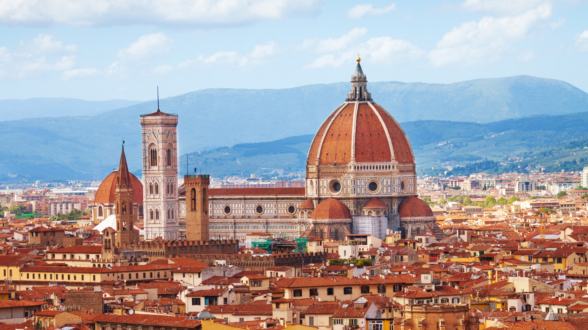

|
Auvers |
France, Île-de-France, Val-d'Oise

|
7,000 |
49.0717° N, 2.1649° E |
Nestled in the picturesque region of Île-de-France, Auvers is known for its tranquil ambiance and rich history. This enchanting village captivates visitors with its cobblestone streets, quaint houses, and scenic landscapes that once inspired renowned artists like Vincent van Gogh. The village's idyllic setting, complete with charming gardens and the calming flow of the nearby Oise River, offers a glimpse into the artistic and natural beauty that has attracted visitors for generations.
|

|
New York |
United States, New York
|
Approx. 8.4 million (city) |
40.7128° N, 74.0060° W |
Dazzling metropolis, iconic skyline, cultural diversity. Central Park's oasis contrasts bustling streets. Statue of Liberty's symbol of freedom. Times Square's electric atmosphere, Broadway's charm. Culinary scene from global to local. Renowned museums, architectural marvels. Every moment, New York City enchants.
|

|
Tokyo |
Japan, Tokyo Metropolis

|
Approx. 13.5 million (city) |
35.6895° N, 139.6917° E |
Tradition meets modernity. Skyscrapers, serene shrines. Shibuya's vibrant pulse, Meiji's tranquility. Tsukiji's seafood bustle, Ginza's luxury. Asakusa's history, Senso-ji's beauty. Seasons transform parks, streets. Culinary delights, Disneyland's magic. Tokyo: where past and future entwine.
|

|
Rio de Janeiro |
Brazil, Rio de Janeiro (State)

|
Approx. 6.7 million |
22.9068° S, 43.1729° W |
Contrasts abound. Copacabana, Ipanema's allure. Christ the Redeemer's awe. Sugarloaf's cable car panorama. Samba, Carnival's rhythm. Historic Santa Teresa's charm. Tijuca's urban forest, Botanical Garden's flora. Feijoada, churrasco delight. Lapa's aqueducts, Selarón Steps' art. Cariocas' passion. Rio: where beauty and vibrancy unite.
|
|

|
Florence |
Italy, Tuscany

|
Approximately 382,000 |
43.7696° N, 11.2558° E |
Nestled in the heart of Tuscany, Florence stands as a timeless masterpiece of art, culture, and history. Its cobbled streets lead to architectural wonders that have shaped Western civilization, such as the magnificent Florence Cathedral with its iconic dome designed by Brunelleschi. The Uffizi Gallery houses an unparalleled collection of Renaissance art, featuring masterpieces by Botticelli, Leonardo da Vinci, and Michelangelo's stunning statue of David. As you wander the Arno River's banks, the Ponte Vecchio's ancient beauty enchants, lined with historic shops. Florence's rich tapestry of artistic heritage and enchanting landscapes has inspired generations, making it a true sanctuary for lovers of art and history.
|